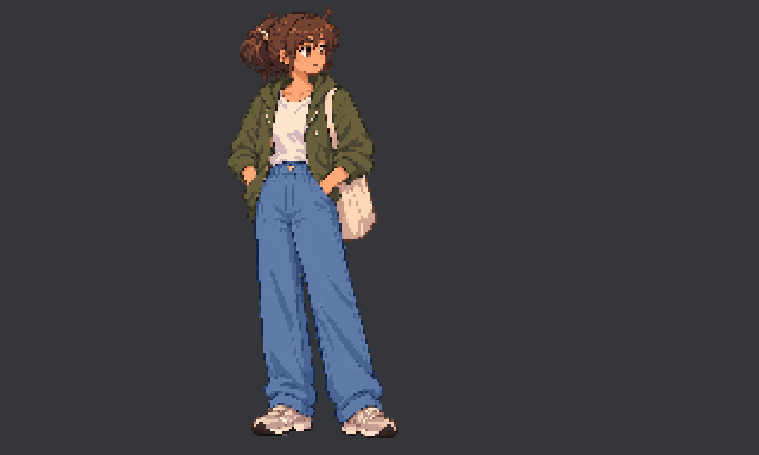

Native-size and3× nearest-neighbor display, both at authored speed. This preview loops for inspection; the Godot attack is a one-shot that returns to idle. No motion blur or hit effects are baked into the character.

Review the shared grip, bag arc, elbow bend, braking foot and return to shoulder. File/native/runtime checks do not establish artistic approval.
Contact with durations · Recovery before/after · Evidence and limits